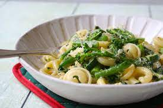

Description
Sometimes we're in the mood for something rich, delicate and a little more complicated. Or perhaps there is more than meets the eye? Indeed, it is so. Why hesitate to partake in tasty feasts? For here, nature deceives our eyes! Neither time, nor effort, nor even energy is particularly required for this glorious feast for the senses! The perfect dish for when it's your turn to host.
Rich cheesy goodness balanced, flavorsome vegetables, all underpinned by the substantiveness of the pasta itself. A feast awaits!
Ingredients
- Dry pasta of your choice, 500g.
- Roquefort cheese or another blue cheese of your choice, 200g.
- Asparagus, 100g.
- Spinach, 100g.
- Courgettes, 400g.
- Tomatoes, 200g.
- A pot.
- A large saucepan.
- Salt.
- Basil.
- Oregano.
- Water.
- Butter, 60g.
- Olive oil, 30g.
Method
Do be sure to wash your veg and skin or chop off bad parts as necessary.
- Clean and chop all the vegetables.
- Put olive oil in the large saucepan and heat.
- Put all the vegetables into the large saucepan. lit it sit in the heat without stirring to develop some browning.
- If the pan is overcrowded blast with very high temperature
- Add water and a lot of salt to the pot. Heat the pot up on the stove. Mix the vegetables in the meanwhile.
- Add butter and the herbs to the vegetables when they have reduced in size a lot.
- When the water in the pot is boiling add the pasta. Leave for however long the packet of your pasta specifies for cooking by boiling.
- When pasta is cooked drain the water, reserving a bit fir later use. About 100-250ml.
- When the vegetables are done turn off the heat. Gently mix in the cheese, making use of the residual heat.
- Combine the vegetables with the pasta into the the bigger container and add back the pasta water.
- Continue incorporating everything.
- When mixed through it's done. Enjoy!